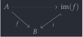
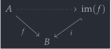

module Cat.Abelian.Images {o ℓ} {C : Precategory o ℓ} (A : is-abelian C) where open is-abelian A
Images in abelian categories🔗
Let be a morphism in an abelian category , which (by definition) admits a canonical decomposition as
where the map is epic, is monic, and the indicated isomorphism arises from in a canonical way, using the universal properties of kernels and cokernels. What we show in this section is that the arrow is an image for : It is the largest monomorphism through which factors. Since this construction does not depend on any specificities of , we conclude that every map in an abelian category factors as a regular epi followed by a regular mono.
The image🔗
images : ∀ {A B} (f : Hom A B) → Image f images f = im where the-img : ↓Obj (const! (cut f)) Forget-full-subcat the-img .x = tt the-img .y .object = cut (Ker.kernel (Coker.coeq f)) the-img .y .witness {c} = kernels-are-subobjects C ∅ _ (Ker.has-is-kernel _)
Break down as an epi followed by a mono . We can take the map as the “image” subobject. We must provide a map filling the dotted line in
 

but this is the epimorphism in our factorisation. More precisely, it’s the epimorphism followed by the isomorphism in the decomposition
the-img .map ./-Hom.map = decompose f .fst ∘ Coker.coeq _ the-img .map ./-Hom.commutes = pulll (Ker.universal _) ∙ Coker.universal _
Universality🔗
Suppose that we’re given another decomposition of as
and we wish to construct a map 1, hence a map such that the triangle
commutes.
im : Image f im .Initial.bot = the-img im .Initial.has⊥ other = contr factor unique where factor : ↓Hom (const! (cut f)) Forget-full-subcat the-img other factor .α = tt factor .β ./-Hom.map = Coker.coequalise (Ker.kernel f) {e′ = other .map .map} path ∘ coker-ker≃ker-coker f .is-invertible.inv
Observe that by the universal property of 2, if we have a map such that , then we can obtain a (unique) map s.t. the triangle above commutes!
where abstract path : other .map .map ∘ 0m ≡ other .map .map ∘ kernel f .Kernel.kernel path = other .y .witness _ _ $ sym $ pulll (other .map .commutes) ·· Ker.equal f ·· ∅.zero-∘r _ ·· 0m-unique ·· sym (ap₂ _∘_ refl ∘-zero-r ∙ ∘-zero-r)
To satisfy that equation, observe that since is monic, it suffices to show that , but we have assumed that , and by the definition of kernel. Some tedious isomorphism-algebra later, we have shown that is the image of .
Here’s the tedious isomorphism algebra.
factor .β ./-Hom.commutes = invertible→epic (coker-ker≃ker-coker f) _ _ $ Coker.unique₂ (Ker.kernel f) {e′ = f} {p = sym (Ker.equal f ∙ ∅.zero-∘r _ ∙ 0m-unique ∙ sym ∘-zero-r)} (sym ( ap₂ _∘_ ( sym (assoc _ _ _) ∙ ap₂ _∘_ refl (cancelr (coker-ker≃ker-coker f .is-invertible.invr))) refl ∙ pullr (Coker.universal _) ∙ other .map .commutes)) (decompose f .snd ∙ assoc _ _ _) factor .sq = /-Hom-path $ sym $ other .y .witness _ _ $ pulll (factor .β .commutes) ·· the-img .map .commutes ·· (sym (other .map .commutes) ∙ ap (other .y .object .map ∘_) (intror refl)) unique : ∀ x → factor ≡ x unique x = ↓Hom-path _ _ refl $ /-Hom-path $ other .y .witness _ _ $ sym (x .β .commutes ∙ sym (factor .β .commutes))